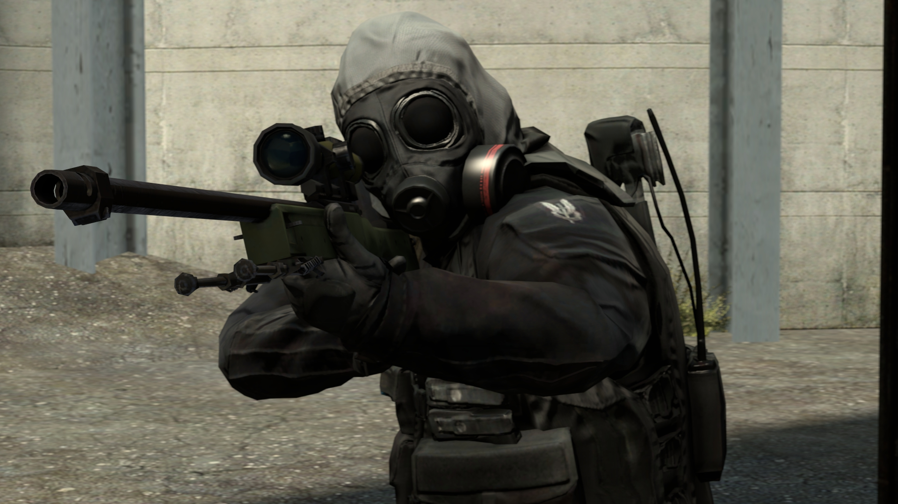

☰
Counter-Strike: Global Offensive – wieloosobowa strzelanka pierwszoosobowa, stworzona oraz wydana przez Valve Corporation i Hidden Path Entertainment, które już wcześniej pracowały nad Counter-Strike: Source

Counter-Strike: Global Offensive, podobnie jak poprzednie gry z serii Counter-Strike, jest wieloosobową grą z gatunku strzelanek pierwszoosobowych, skupiającą się na wykonywaniu zadań. Dwie przeciwne drużyny z postaciami terrorystów i antyterrorystów rywalizują w różnych trybach gry wykonując określone cele, np. podłożenie bomby lub ochrona zakładników w przypadku terrorystów, a w przypadku antyterrorystów ochrona obszaru przed podłożeniem bomby (lub jej rozbrojenie) albo ewakuacja zakładników. Na koniec każdej rundy gracze uzyskują nagrodę pieniężną w walucie wirtualnej, która pozwala na zakup lepszego wyposażenia w kolejnej rundzie. Gracze otrzymują nagrody drużynowe zarówno za wygraną, jak i przegraną rundę (przy czym większa nagroda przyznawana jest drużynie w przypadku wygranej). Oprócz tego występują nagrody indywidualne za wykonanie zadania (np. podłożenie bomby) oraz nagrody za zabójstwa (wartości różnią się w zależności od rodzaju użytej broni). Gracz może uzyskać również karę pieniężną, np. za ogień bratobójczy (ang. friendly fire).
CS: GO zawiera nowe mapy oraz zaktualizowane wersje klasycznych map Counter-Strike, takie jak de_dust2, cs_office lub de_inferno. W CS:GO pojawiły się nowe elementy, które nie występowały w poprzednich grach z serii, przede wszystkim granat zapalający w obu drużynach, nowe bronie (np. wyciszony pistolet USP-S, paralizator Zeus X27, automatyczny pistolet CZ-75 Auto, strzelby i in.). Do gry dodano także nowe tryby, tj. „Wyścig zbrojeń” i „Demolka”, oparte na modyfikacjach do starszych edycji CS oraz nowe mapy, zaprojektowane na potrzeby tych trybów. Usunięto także niektóre elementy starszych gier z serii, np. możliwość swobodnego latania po mapie po śmierci (właścicielom serwerów społeczności umożliwiono jednak konfigurację tej funkcji w ustawieniach serwera). Usunięto pistolet maszynowy MP5 oraz pistolet USP w wersji bez tłumika i zastąpiono je nowymi broniami. Usunięto również osłonę taktyczną. Funkcja malowania sprayów nie była dostępna w grze do momentu dodania wymienialnych wirtualnych przedmiotów, zwanych graffiti.
Przejdź na stronę główną